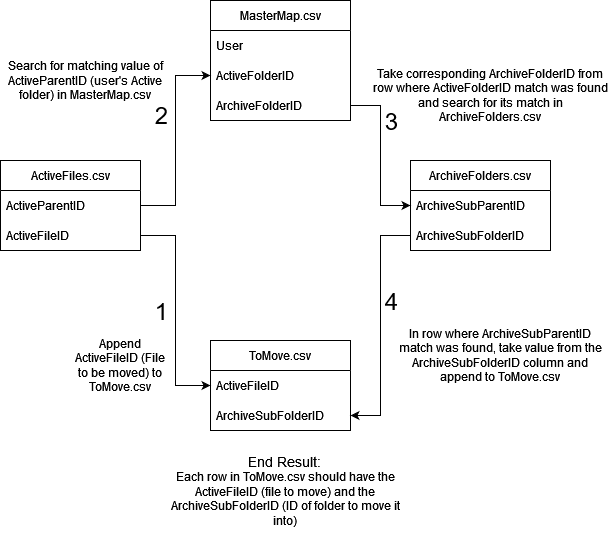

MoveO3Notes.ps1
The MoveO3Notes.ps1 script is responsible for placing the files in each user’s Active folder into the appropriate Archived/[yyyy-mm] subfolder.
In order to map where each file needs to go, three inputs CSVs are used; ArchiveSubfolderIDs.csv, ActiveFileIDs.csv, and MasterMap.csv. Two output CSVs are generated, ToMove.csv which is the product of mapping files to the right folder and is used for making the API Call. [yyyy-mm-dd]-NotesMoved.csv is also created from Box’s response to the API Call. The graphic below demonstrates how this process works.
Please note that ArchiveFolders.csv as shown in the image will actually be called ArchiveSubfolderIDs.csv
ActiveFileIDs.csv
1"type","id","parent.type","parent.id","parent.sequence_id","parent.etag","parent.name","name"
2"file","1267167434323","folder","218803091859","0","0","Active","2023-07-26.boxnote"
3"file","1267176409533","folder","218803453792","0","0","Active","2023-07-26.boxnote"
4"file","1267167032866","folder","218799584712","0","0","Active","2023-07-26.boxnote"
5"file","1267176028384","folder","218803407705","0","0","Active","2023-07-26.boxnote"
6"file","1267175329725","folder","218801123067","0","0","Active","2023-07-26.boxnote"
7"file","1267175269565","folder","218806406017","0","0","Active","2023-07-26.boxnote"
8"file","1267175629939","folder","218808282886","0","0","Active","2023-07-26.boxnote"
9"file","1267156492214","folder","218807770866","0","0","Active","2023-07-26.boxnote"
10"file","1267175550960","folder","218812811514","0","0","Active","2023-07-26.boxnote"
11"file","1267171587751","folder","218807793088","0","0","Active","2023-07-26.boxnote"
12"file","1267175878968","folder","218813054146","0","0","Active","2023-07-26.boxnote"
13"file","1267167736227","folder","218812678889","0","0","Active","2023-07-26.boxnote"
14"file","1267166907877","folder","218813116032","0","0","Active","2023-07-26.boxnote"
15"file","1267176318545","folder","218812881434","0","0","Active","2023-07-26.boxnote"
16"file","1267175562598","folder","218810024820","0","0","Active","2023-07-26.boxnote"
17"file","1267156533014","folder","218811606956","0","0","Active","2023-07-26.boxnote"
18"file","1267175881632","folder","218811807610","0","0","Active","2023-07-26.boxnote"
19"file","1267175965261","folder","218808273465","0","0","Active","2023-07-26.boxnote"
20"file","1267171424530","folder","218813037202","0","0","Active","2023-07-26.boxnote"
21"file","1267175312443","folder","218810219723","0","0","Active","2023-07-26.boxnote"
ArchiveSubfolderIDs.csv
1"type","id","parent.type","parent.id","parent.sequence_id","parent.etag","parent.name","name"
2"folder","218813502034","folder","218812969317","0","0","Archived","2023-07"
3"folder","218813283663","folder","218812722987","0","0","Archived","2023-07"
4"folder","218807721584","folder","218807898564","0","0","Archived","2023-07"
5"folder","218810770899","folder","218808772382","0","0","Archived","2023-07"
6"folder","218810253586","folder","218812995800","0","0","Archived","2023-07"
7"folder","218813344211","folder","218809367028","0","0","Archived","2023-07"
8"folder","218813022105","folder","218813358034","0","0","Archived","2023-07"
9"folder","218812962752","folder","218807276784","0","0","Archived","2023-07"
10"folder","218813553159","folder","218813193211","0","0","Archived","2023-07"
11"folder","218810860498","folder","218812864246","0","0","Archived","2023-07"
12"folder","218813044314","folder","218808774242","0","0","Archived","2023-07"
13"folder","218810843191","folder","218812840741","0","0","Archived","2023-07"
14"folder","218808102755","folder","218812948132","0","0","Archived","2023-07"
15"folder","218808169554","folder","218813070154","0","0","Archived","2023-07"
16"folder","218813058168","folder","218808222367","0","0","Archived","2023-07"
MasterMap.csv
1"User","ArchiveFolderID","ActiveFolderID"
2"TestUser's O3 Notes","218803635894","218803091859"
MoveO3Notes.ps1
1# Script for moving O3 Notes from Active to Archived subfolder
2
3# Steps needed to complete task:
4# Pull input files from O3 Note creation (ID, ParentID), Archived Subfolder creation (ID, ParentID), MasterMapping (Username, ArchiveID, ActiveID), Box report (O3 Note ID, Modified-date)
5# Compare O3 Note ParentID (ActiveID) to MasterMapping to find User's ArchiveID
6# Compare recent Archive Subfolder ParentID (ArchiveID) to MasterMapping
7# Append O3 Note ID and Archive Subfolder ID to a new CSV
8# Append last modified date to above CSV and change columnname to 'Name'
9# Rename O3 Note file to last modified date
10# Run box:files move bulk command using new CSV to put O3 Notes into appropriate Archived subfolder
11
12$DATE = (Get-Date -Format "yyyy-MM-dd")
13$DATE2 = (Get-Date -Format "yyyy-MM")
14$ExportPath = ".\Output\" + $($DATE) + "-NotesMoved.csv"
15
16Function moveMapping {
17 # Set the paths to the input CSV files
18 $archiveSubfoldersFile = ".\Input\" + $($DATE2) + "ArchiveSubfolderIDs.csv"
19 $activeFileIDsFile = ".\Input\" + $($DATE) + "ActiveFileIDs.csv"
20 $masterMapFile = ".\Input\MasterMap.csv"
21
22 # Set the path to the output CSV file
23 $toMoveFile = ".\Output\ToMove.csv"
24
25 # Read the CSV files
26 $archiveSubfolders = Import-Csv $archiveSubfoldersFile
27 $activeFileIDs = Import-Csv $activeFileIDsFile
28 $masterMap = Import-Csv $masterMapFile
29
30 # Create a new array to store the results
31 $results = @()
32
33 # Add this line to check if the ActiveFileIDs.csv has been loaded correctly
34 Write-Host "Number of ActiveFileIDs: $($activeFileIDs.Count)"
35
36 # Iterate through the ActiveFileIDs.csv
37 foreach ($activeFileID in $activeFileIDs) {
38 # Get the ActiveFileID
39 $activeID = $activeFileID.id
40
41 # Find the matching row in the MasterMap.csv
42 $matchingRow = $masterMap | Where-Object { $_.ActiveFolderID -eq $activeFileID.'parent.id' }
43
44 Write-Host "Matching row in MasterMap: $($matchingRow -ne $null)"
45
46 if ($matchingRow) {
47 # Get the ArchiveFolderID from the matching row
48 $archiveFolderID = $matchingRow.ArchiveFolderID
49
50 # Find the matching row in the ArchiveSubfolders.csv
51 $matchingRow = $archiveSubfolders | Where-Object { $_.'parent.id' -eq $archiveFolderID }
52
53 Write-Host "Matching row in ArchiveSubfolders: $($matchingRow -ne $null)"
54
55 if ($matchingRow) {
56 # Get the ArchiveSubFolderID from the matching row
57 $archiveSubFolderID = $matchingRow.id
58
59 # Create a new object with the ActiveFileID and ArchiveSubFolderID
60 $result = [PSCustomObject] @{
61 ID = $activeID
62 ParentID = $archiveSubFolderID
63 }
64
65 # Add the result to the results array
66 $results += $result
67 }
68 }
69 }
70
71 # Add this line to check the number of results
72 Write-Host "Number of results: $($results.Count)"
73 # Export the results to the ToMove.csv file
74 $results | Export-Csv $toMoveFile -NoTypeInformation
75 $moveResp = box files:move --bulk-file-path=$toMoveFile --csv
76 $moveResp | Export-Csv $ExportPath -NoTypeInformation
77}
78
79moveMapping
Output/ToMove.csv
1"ID","ParentID"
2"1267175269565","218813502034"
3"1267175629939","218813283663"
4"1267156492214","218807721584"
5"1267175550960","218810770899"
6"1267171587751","218810253586"
7"1267175878968","218813344211"
8"1267167736227","218813022105"
9"1267166907877","218812962752"
10"1267176318545","218813553159"
11"1267175562598","218810860498"
12"1267156533014","218813044314"
13"1267175881632","218810843191"
14"1267175965261","218808102755"
15"1267171424530","218808169554"
16"1267175312443","218813058168"
The files to be moved (ID) have been mapped to the folders they should be moved to (ParentID).